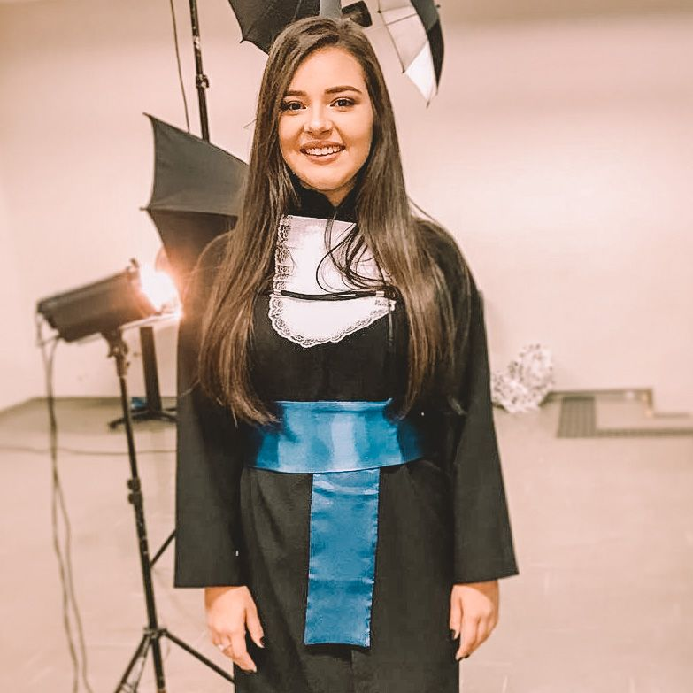

Currículo
Dados Pessoais
Nome:
Ana Júlia Fiorotto Panissa Ribeiro
Data de Nascimento:
06/09/2000
Residência:
Pouso Alegre - MG, Brasil
Idiomas:
Português (Nativo)
Inglês (Intermediário)
Sobre Mim
Estou me graduando em Engenharia de Computação na Universidade Federal de Itajubá e durante esse período já fui diretora de divulgação e diretora de eventos do DACOMP, e atualmente sou trainee na Asimov.
Fiz o ensino médio integrado ao curso Técnico em Informática no Instituto Federal do Sul de Minas no campus Pouso Alegre.
Durante o ensino fundamental fui medalhista de ouro e de bronze na Olimpíada Brasileira de Matemática das Escolas Públicas, recebi duas menções honrosas da mesma e por causa disso fui contemplada por três anos a uma bolsa do Programa de Iniciação Científica Jr..
Educação
2019 - Em andamento
Graduação em Engenharia de Computação na UNIFEI
2016 - 2018
Curso Técnico em Informática no IFSULDEMINAS - Pouso Alegre
2013 - 2015
Programa de Iniciação Científica Jr. no polo de Pouso Alegre
Habilidades
Programação
C / C++ / Java / JavaScript / HTML / CSS / PHP / Phyton
Contato
anajuliafiorotto@gmail.com
(35)99729-7619
← Voltar ao início